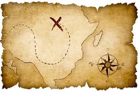
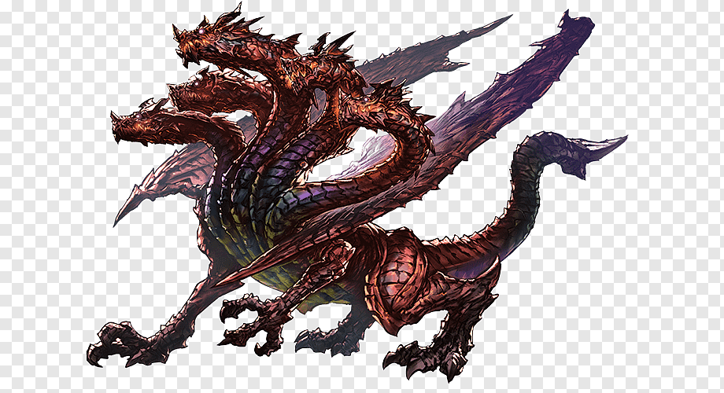

Com o Sol escaldante no céu, nós nos deparavamos com nosso grupo de heróis cansados depois de uma missão, no seu lado direito um anão com seu martelo gigante e baraba de cor castanho escuro, ao seu lado esquerdo um elfo de cabelos loiros e seu arco pendurado sobre o ombro, a sua frente um paladino que porta uma armadura clara e duas espadas longas dentro da bainha, já você é um curandeiro, ou seja a pior categoria que pode ser escolhida, chega até a ser meio deplorável sua situação, estou com pena de você, sério. Após mais um tempo de caminhada vocês chegam a ua cidade de nome que eu não tive criatividade nem vontade o bastante para pensar. O que você decide fazer?
Após entrar na adega, você e seu grupo se sentam em uma mesa no meio da multidão, após um tempo de conversa entre seus camaradas vocês percebem que um grupo de homens se sentam em uma mesa ao lado e observam vocês, o que você decide fazer?
Você encontra o homem que havia requisitado a missão, após uma curta conversa ele entrega um saco cheio de ouro, antes de sair o homem diz que encontrou um mapa que leva a uma masmorra a noroeste da cidade, o que você e seu grupo decidem fazer?
O Anão demonstrando o auge de sua coragem resolve tirar satisfação com o grupo de antes, após uma discussão uma brigga começa, depois de alguns golpes vindo de ambos os lados uma voz é ouvida mandando que todos parassem, era o dono da adega pedindo para ambos os grupos saírem.
Após sair da adega, seu grupo é atacado e morto pelo mesmo grupo que você tinha visto no interior da estrutura, um destino cruel e trágiaco.
Após uma viagem longa e exaustante você e seu grupo chegam na entrada da masmorra, passando pelas salas e matando os monstros, até finalmente chegarem no final da masmorra, no centro da sala pode ser visto um baú, quando seu grupo se aproxima do tesouro um som estridente é ouvido por toda sala. vindo das sombras um monstro aparece, o que vocês fazem?
É sério que você escolheu isso?
Após uma árdua batalha contra o monstro vocês finalmente vencem a criatura, ao se aproximarem do baú a ansiedade só aumenta, então, vocês finalmente abrem o baú e encontram uma mensagem.
O verdadeiro tesouro são os amigos que fazemos no caminho.
Vocês tentam fugir porém são pegos por uma armadilha e são mortos.